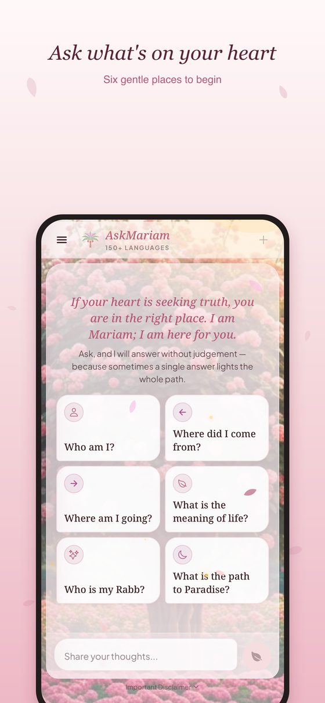
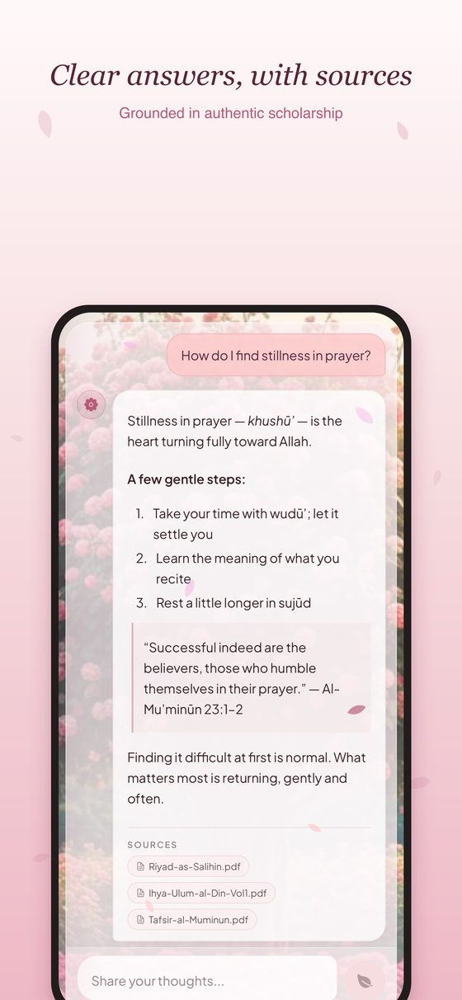

Yazıyla, sesle ve yüz yüze konuşan, kaynak gösteren bir yapay zekâ asistanıAn AI assistant that answers by text, voice and face to face — with sources
AskAboutIslam ve kardeş projesi AskMariam, İslam hakkındaki soruları saygılı bir dille, kaynak göstererek ve 20+ dilde yanıtlayan sosyal sorumluluk projeleri. Web ve mobil uygulamalarda yazılı, sesli ve video avatarlı sohbet sunuyorlar.AskAboutIslam and its sister project AskMariam are social-impact projects that answer questions about Islam respectfully, with sources, in 20+ languages. They offer text, voice and video-avatar chat on web and mobile.
 askaboutislam.ai
askaboutislam.ai askmariam.com
askmariam.comProblemThe problem
Din hakkında soru soran biri, yargılanmadan, sade bir dille ve güvenilir kaynaklara dayanan bir cevap bekliyor. Herkes yazarak soru sormayı tercih etmiyor; bazıları konuşarak, bazıları karşısında bir yüz görerek daha rahat hissediyor. Bunların hepsinin aynı kaynaklara ve aynı kurallara bağlı kalması gerekiyordu.Someone asking about faith expects an answer without judgement, in plain language, grounded in reliable sources. Not everyone prefers typing; some feel more at ease speaking, some seeing a face. All of these had to stay tied to the same sources and the same rules.
YaklaşımApproach
OpenAI Responses API ve bir vektör deposunda dosya araması; her cevabın altında kaynak çipleri görünüyor.OpenAI Responses API with file search over a vector store; source chips appear under every answer.
İstemci kısa ömürlü bir anahtar alıp OpenAI Realtime'a doğrudan WebRTC ile bağlanıyor; ses sunucudan geçmiyor. Realtime'da dosya araması olmadığı için oturuma bir search_sources aracı veriliyor ve vektör deposuna köprüleniyor. Yazılı geçmiş sese, ses dökümü yazılı sohbete aktarılıyor.The client obtains a short-lived secret and connects to OpenAI Realtime directly over WebRTC; audio never touches the server. Since Realtime has no file search, the session gets a search_sources tool bridged to the vector store. Typed history flows into voice and transcripts flow back into the chat.
Tavus CVI ile konuşan bir avatar. Avatarın dil katmanı, uygulamanın OpenAI uyumlu özel LLM ucunu çağırıyor; böylece video cevapları da aynı RAG hattına, aynı persona ve kurallara dayanıyor.A talking avatar built on Tavus CVI. The avatar's language layer calls the app's own OpenAI-compatible LLM endpoint, so video answers rely on the same RAG pipeline, persona and rules.
Oturum, cihaz ve eşzamanlılık limitleri, kapanmayan odaları kapatan bir süpürücü, çok katmanlı mesaj limitleri ve bot kontrolü. Webhook olayları Tavus API'sine karşı doğrulanıyor.Per-session, per-device and concurrency limits, a sweeper that closes orphaned rooms, multi-tier message limits and bot checks. Webhook events are verified against the Tavus API.
Yönetim panelinden model, persona, ses ve limitler yeniden başlatmadan değiştirilebiliyor; her değişiklik kaydedilmeden önce OpenAI'a karşı test ediliyor.Model, persona, voice and limits can be changed from the admin panel without a restart; every change is tested against OpenAI before it is saved.
EkranlarScreens


TeknolojiTechnology
- Web: React + Vite (AskAboutIslam), Next.js 16 (AskMariam)Web: React + Vite (AskAboutIslam), Next.js 16 (AskMariam)
- Mobil: React Native + Expo; yerel modüller tembel yükleniyor, eski sürümler OTA güncellemesiyle bozulmadan çalışıyorMobile: React Native + Expo; native modules load lazily so older binaries keep working after OTA updates
- Sunucu: Node.js, PM2 ve Nginx; Turnstile ile bot korumasıServer: Node.js, PM2 and Nginx; Turnstile bot protection
- AI: OpenAI Responses & Realtime, vektör deposu, MCP, Tavus CVI, Daily WebRTCAI: OpenAI Responses & Realtime, vector store, MCP, Tavus CVI, Daily WebRTC
Benzer bir problem üzerine mi düşünüyorsunuz?Thinking about a similar problem?
Mimari, yapay zekâ entegrasyonu ya da ürünleştirme üzerine konuşmaktan memnuniyet duyarım. Satış görüşmesi değil, sadece bir sohbet.I'm happy to talk through architecture, AI integration or productisation. Not a sales call — just a conversation.
TanışalımLet's talk WhatsApp